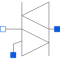

SimpleTriacSimple triac, based on Semiconductors.Thyristor model |

|
Diagram
{kind=link}
Information
This information is part of the Modelica Standard Library maintained by the Modelica Association.
This is a simple TRIAC model based on the extended thyristor model Modelica.Electrical.Analog.Semiconductors.Thyristor.
Two thyristors are contrarily connected in parallel, whereas each transistor is connected with a diode.
Further information regarding the electrical component TRIAC can be detected in documentation of the ideal TRIAC model.
As an additional information: this model is based on the Modelica.Electrical.Analog.Semiconductors.Thyristor.
Attention: The model seems to be very sensitive with respect to the choice of some parameters (e.g., VDRM, VRRM). This is caused by the thyristor model. Further investigations are necessary.
Parameters (14)
| VDRM |
Value: 100 Type: Voltage (V) Description: Forward breakthrough voltage |
|---|---|
| VRRM |
Value: 100 Type: Voltage (V) Description: Reverse breakthrough voltage |
| IDRM |
Value: 0.1 Type: Current (A) Description: Saturation current |
| VTM |
Value: 1.7 Type: Voltage (V) Description: Conducting voltage |
| IH |
Value: 6e-3 Type: Current (A) Description: Holding current |
| ITM |
Value: 25 Type: Current (A) Description: Conducting current |
| VGT |
Value: 0.7 Type: Voltage (V) Description: Gate trigger voltage |
| IGT |
Value: 5e-3 Type: Current (A) Description: Gate trigger current |
| TON |
Value: 1e-6 Type: Time (s) Description: Switch on time |
| TOFF |
Value: 15e-6 Type: Time (s) Description: Switch off time |
| Vt |
Value: 0.04 Type: Voltage (V) Description: Voltage equivalent of temperature (kT/qn) |
| Nbv |
Value: 0.74 Type: Real Description: Reverse Breakthrough emission coefficient |
| useHeatPort |
Value: false Type: Boolean Description: =true, if HeatPort is enabled |
| T |
Value: 293.15 Type: Temperature (K) Description: Fixed device temperature if useHeatPort = false |
Connectors (4)
| n |
Type: NegativePin Description: Cathode |
|
|---|---|---|
| p |
Type: PositivePin Description: Anode |
|
| g |
Type: PositivePin Description: Gate |
|
| heatPort |
Type: HeatPort_a |
Components (4)
| thyristor |
Type: Thyristor |
|
|---|---|---|
| thyristor1 |
Type: Thyristor |
|
| idealDiode |
Type: IdealDiode |
|
| idealDiode1 |
Type: IdealDiode |
Used in Examples (1)
|
Modelica.Electrical.Analog.Examples
Simple triac test circuit |